7. Network Layer: Routing (RIP, OSPF, BGP)
This chapter covers Part II Lecture 3. Chapter 6 showed how a router uses its routing table (forwarding). This chapter shows how the table gets filled in (routing).
High-yield exam tasks:
- Update a distance-vector table from the vectors of the neighbours.
- Run Dijkstra’s algorithm step by step and give the next hops.
- Explain count-to-infinity and poisoned reverse.
- Build a BGP table (AS paths, next hops, preferred path) and explain transit and policy.
1. Where Routes Come From
A routing table lists destination networks and how to reach them, usually through a next-hop router. An entry can come from three places:
- Directly connected networks: the router knows these from its own interfaces.
- Static routes: an administrator types them in.
- Dynamic routing protocols: routers exchange information with each other and update the routes when the network changes.
Forwarding is looking up the table for each packet. Routing is how the table gets filled in.
Typing routes by hand works for a tiny network. In a large network, links change, and the networks belong to different organisations. So we need routing protocols.
2. Two Levels of Routing
2.1 Autonomous systems
- An autonomous system (AS) is a group of IP networks and routers under one administration with one routing policy. Examples: a university campus, an ISP, a data centre.
- An AS number (ASN) identifies the AS. An IP prefix identifies a destination network inside it.
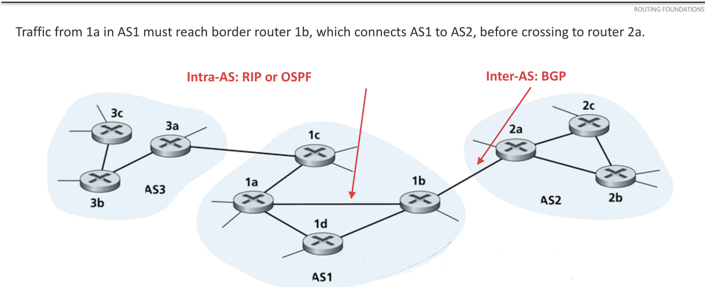
2.2 Intra-AS and inter-AS
| Intra-AS (inside one AS) | Inter-AS (between ASes) | |
|---|---|---|
| Protocols | RIP, OSPF (called IGPs, interior gateway protocols) | BGP |
| Policy | One administrator sets common goals. | Each AS decides which routes it accepts and which traffic it carries. |
| Performance | Can find efficient paths with a shared cost measure. | Business agreements and policy can matter more than the shortest path. |
| Scale | One organisation’s network. | The whole Internet is too large for one detailed map. ASes share reachability, not their internal links. |
3. Distance Vector: RIP
3.1 The idea
RIP (Routing Information Protocol) is a distance-vector protocol used inside an AS.
- A distance vector is a list: for each destination network, the router’s current distance to it.
- Each router sends its distance vector to its neighbours (the routers directly connected to it). It does this regularly (about every 30 s) and also when a route changes (a triggered update).
- RIP normally measures distance in hops: each router crossed costs 1.
3.2 The update rule (Bellman–Ford)
When router X gets a vector from neighbour N:
The next hop for that destination is the neighbour that gave the minimum.
- With normal RIP, .
- If the question gives a link cost, add that cost instead of 1. Example: a neighbour reports 4 and the link costs 3. The total is 7, via that neighbour.
3.3 Worked example: building A’s table (lecture)
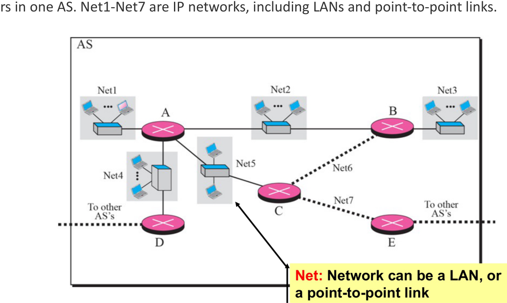
- Start: A knows only its own networks: Net1, Net2, Net4 and Net5, each with distance 1 and next hop “direct”.
- A gets reports: B reports Net2, Net3 and Net6 at distance 1. C reports Net5, Net6 and Net7 at 1. D reports Net4 at 1.
- A adds 1 to each reported distance and keeps the smallest:
| Destination | Distance | Next hop |
|---|---|---|
| Net1, Net2, Net4, Net5 | 1 | direct |
| Net3 | 2 | B |
| Net6 | 2 | B or C (a tie) |
| Net7 | 2 | C |
When later updates do not change any entry, the routes have converged.
3.4 Worked example: distance vector with link costs
Router G has three neighbours. The link costs that G measures are: to H = 4, to J = 1, to K = 6. G receives these vectors (destinations in the order G, H, J, K, M, N):
- from H: (4, 0, 3, 5, 2, 7)
- from J: (1, 4, 0, 4, 6, 3)
- from K: (6, 5, 4, 0, 3, 2)
Step 1. Add the link cost to every entry of each vector. Then take the smallest total in each row:
| Destination | Via H (+4) | Via J (+1) | Via K (+6) | Best | Next hop |
|---|---|---|---|---|---|
| G | — | — | — | 0 | — |
| H | 4 | 5 | 11 | 4 | H |
| J | 7 | 1 | 10 | 1 | J |
| K | 9 | 5 | 6 | 5 | J |
| M | 6 | 7 | 9 | 6 | H |
| N | 11 | 4 | 8 | 4 | J |
Step 2. G’s new table is (0, 4, 1, 5, 6, 4) with next hops (–, H, J, J, H, J).
Two points to notice:
- K is a neighbour, but G does not use the direct link to reach it. The direct link costs 6. The path through J costs . Distance vector always picks the lowest total, not the direct link.
- G ignores its old table. The new table depends only on the neighbours’ new vectors and the link costs. G’s own entry is always 0.
3.5 The problem: count-to-infinity
A vector gives only a distance, not the path. So a router cannot see that a neighbour’s route goes back through itself.
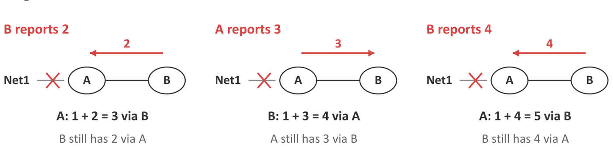
- Before the failure: A reaches Net1 directly (1). B reaches Net1 through A (2).
- A’s link to Net1 fails.
- Before B hears this, B tells A: “Net1: 2”. A thinks it has a new path: via B. But B’s route goes through A. Packets now loop between A and B.
- A tells B “3”. B updates to via A. A updates to 5. This goes on and on.
Each router keeps adding 1 to the other’s distance. This is count-to-infinity.
3.6 Safeguards
1. RIP’s limit: 16 = infinity. RIP treats a distance of 16 as unreachable. So the count stops at 16. The usable distances are 1 to 15.
This limit also restricts the network. With a cost of 5 per hop, 3 hops give 15 (reachable), but 4 hops give 20, which becomes 16 (unreachable), even though the path exists.
2. Poisoned reverse. A router tells its next hop for a destination that it cannot reach that destination (distance 16).
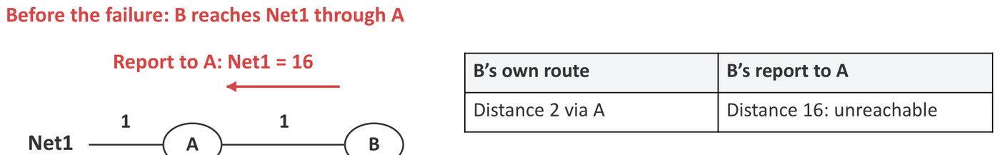
- B reaches Net1 through A. So B tells A: “Net1 = 16”. In effect: “You cannot reach Net1 through me, because I reach it through you.”
- B does this all the time, even while the route works.
- If A’s link then fails, A will not use B as an alternative.
- Poisoned reverse stops two-router loops. Loops of three or more routers can still happen.
4. Link State: OSPF
4.1 The idea
OSPF (Open Shortest Path First) is a link-state protocol used inside an AS.
- RIP shares distances to destinations. OSPF shares links and their costs.
- Every router collects every link report and builds a map of the whole area.
- Each router then runs Dijkstra’s algorithm on the map to find the least-cost path from itself to every destination.
- An OSPF cost is a number that an administrator sets. Lower is better. It is commonly based on bandwidth, so links need not count equally.
4.2 Hop count against link cost
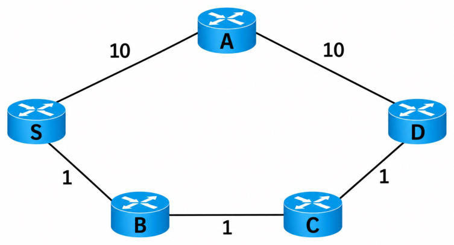
| Path | Hops (RIP) | Cost (OSPF) |
|---|---|---|
| S–A–D | 2 | 20 |
| S–B–C–D | 3 | 3 |
RIP chooses the 2-hop path. OSPF chooses the path with cost 3. The difference comes from the metric.
4.3 The five steps of OSPF
- Discover neighbours: each router sends Hello packets on its links. (On Ethernet they go by multicast, so no list of neighbours is needed.) Regular Hellos also check that the neighbours still answer.
- Describe local links: each router builds a link-state advertisement (LSA) that lists its own links and their costs. It does not need to know the rest of the network.
- Flood the reports: each new LSA is passed from neighbour to neighbour through the whole area (a group of routers that share detailed link information). OSPF acknowledges LSAs, sends them again if they are lost, and ignores duplicates and old copies.
- Build the database: each router stores every LSA in its link-state database (LSDB). This is the map. After convergence, every router in the area has the same map.
- Calculate routes: each router runs Dijkstra from its own position. So the routing tables differ, even though the maps are the same.
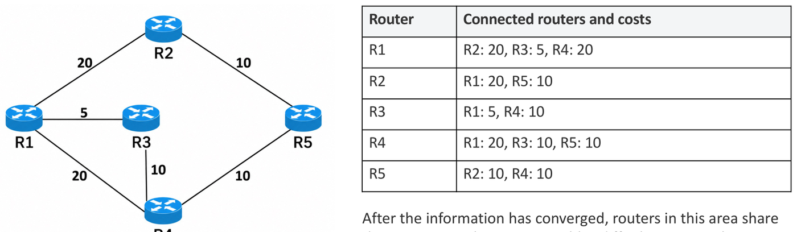
4.4 Dijkstra’s algorithm
Terms:
- Tentative distance: the best cost found so far.
- Settled: a router whose distance is confirmed as the minimum.
- Predecessor: the router just before this one on the best path.
Steps:
- Give the source distance 0 and every other router .
- Settle the unsettled router with the smallest tentative distance.
- For each neighbour of that router: if (settled distance + link cost) is less than the neighbour’s tentative distance, update it and record the predecessor.
- Repeat steps 2 and 3 until every router is settled.
- To get the next hop for a destination, follow the predecessors back to the source. The first router after the source is the next hop.
4.5 Worked example (lecture)
Links: R1–R2 = 20, R1–R3 = 5, R1–R4 = 20, R2–R5 = 10, R3–R4 = 10, R4–R5 = 10. The source is R1.
| Settled | R2 | R3 | R4 | R5 |
|---|---|---|---|---|
| R1 | 20 (R1) | 5 (R1) | 20 (R1) | ∞ |
| R1, R3 | 20 | 5 | 15 (R3) | ∞ |
| R1, R3, R4 | 20 | 5 | 15 | 25 (R4) |
| R1, R3, R4, R2 | 20 | 5 | 15 | 25 (via R2 it would be 30, so keep 25) |
| all | 20 | 5 | 15 | 25 |
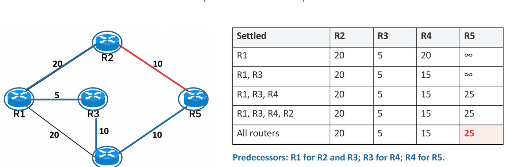
| Destination | Cost | Path | Next hop from R1 |
|---|---|---|---|
| R2 | 20 | R1–R2 | R2 |
| R3 | 5 | R1–R3 | R3 |
| R4 | 15 | R1–R3–R4 | R3 |
| R5 | 25 | R1–R3–R4–R5 | R3 |
Router paths to IP prefixes. If each network attachment costs 2, then a network behind R5 (10.11.0.0/16) costs , and the next hop is still R3.
After the R3–R4 link fails: R3 and R4 notice the failure. They send new LSAs, and flooding spreads them. R1 removes the link from its map and runs Dijkstra again. Now R4 = 20 (direct), and R5 = 30 through either R2 or R4. These are equal-cost paths, and OSPF can use both.
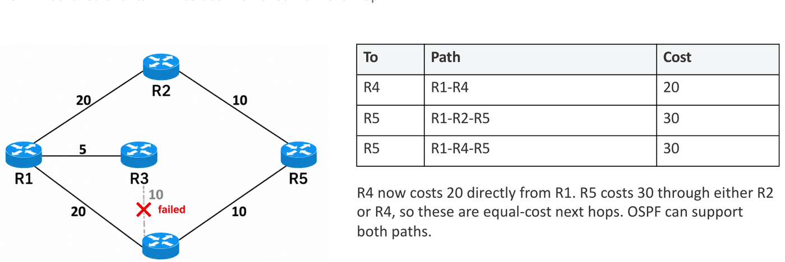
4.6 A second example: the direct link is not always best
Links: S–A = 2, S–B = 5, A–B = 1, A–C = 6, B–C = 2, B–D = 7, C–D = 1. The source is S.
| Step | Settled | A | B | C | D |
|---|---|---|---|---|---|
| 0 | S | 2 (S) | 5 (S) | ∞ | ∞ |
| 1 | S, A | 2 | 3 (A) | 8 (A) | ∞ |
| 2 | S, A, B | 2 | 3 | 5 (B) | 10 (B) |
| 3 | S, A, B, C | 2 | 3 | 5 | 6 (C) |
| 4 | all | 2 | 3 | 5 | 6 |
At step 1, B’s distance drops from 5 to 3. The direct link S–B costs 5, but the path S–A–B costs only . A tentative distance can go down until the router is settled. It never changes after that.
| Destination | Cost | Path | Next hop from S |
|---|---|---|---|
| A | 2 | S–A | A |
| B | 3 | S–A–B | A |
| C | 5 | S–A–B–C | A |
| D | 6 | S–A–B–C–D | A |
To read a path, follow the predecessors back from the destination: D’s predecessor is C, C’s is B, B’s is A, and A’s is S. Reverse the list to get S–A–B–C–D.
5. RIP Against OSPF
| RIP (distance vector) | OSPF (link state) | |
|---|---|---|
| What is shared | Distances to destinations, with neighbours only | Link costs, flooded to the whole area |
| How routes are found | Add the cost to the neighbour to the neighbour’s distance (Bellman–Ford) | Run Dijkstra on the full map |
| Usual metric | Hop count (configured costs are possible) | Configured cost, often based on bandwidth |
| Metric range | Total of 15 at most (16 = unreachable) | Much wider |
| After a failure | Can count to infinity. Poisoned reverse stops two-router loops. | Flood the changed LSA, then recalculate. Converges fast. |
| Knowledge | Each router knows only its neighbours’ vectors | Each router knows the whole area’s map |
True/false traps: “RIP is distance vector” (true). “OSPF is link state” (true). “OSPF uses Bellman–Ford” (false: it uses Dijkstra). “BGP uses UDP” (false: BGP runs over TCP). “BGP is used between ASes” (true).
6. Inter-AS Routing: BGP
6.1 Types of AS
Transit traffic passes through an AS when both its source and its destination are outside that AS.
| Type | External connections | Carries transit traffic? |
|---|---|---|
| Stub AS | One | No. Traffic starts or ends here. |
| Multihomed non-transit AS | More than one | No. Traffic starts or ends here. |
| Transit AS | Several | Yes. It carries traffic between other ASes. |
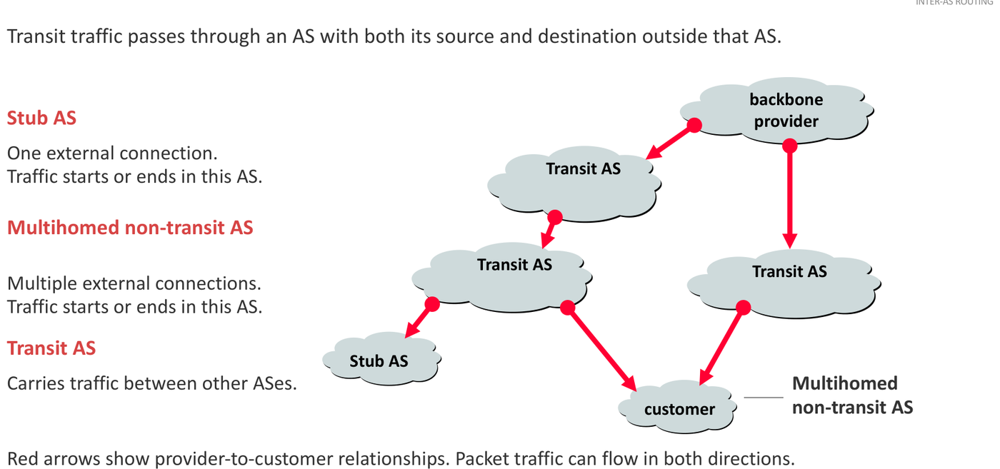
6.2 Business relationships
- Customer–provider (transit): the customer (for example a campus) pays the provider to reach the rest of the Internet.
- Peering: two ASes (P and Q) exchange traffic between their own networks and customers. They do not give each other unlimited transit. Peering is often free (settlement-free), but paid peering also exists.
6.3 Why not run OSPF over the whole Internet?
- Policy: each AS decides whose traffic it carries and which routes it offers. A physical link does not mean permission to use it.
- Policy can beat performance: a business agreement can matter more than a shorter path.
- Scale: ASes exchange reachability without sharing every internal router, link and change.
6.4 What BGP is
- BGP (Border Gateway Protocol) exchanges reachability information between ASes.
- A border router (gateway router) connects its AS to another AS.
- eBGP (external BGP): route exchange between routers in different ASes.
- iBGP (internal BGP): route exchange between routers in the same AS. It spreads routes learnt from outside to the other routers inside.
- BGP sends its messages over TCP.
6.5 What BGP sends: path vectors
A BGP advertisement says: “You can reach this prefix through me.” It carries the AS path: the list of AS numbers on the route to that prefix. So BGP is a path-vector protocol.
- When an AS advertises a route to another AS, it adds (prepends) its own ASN to the front of the path.
- The data packets travel in the opposite direction to the advertisements.
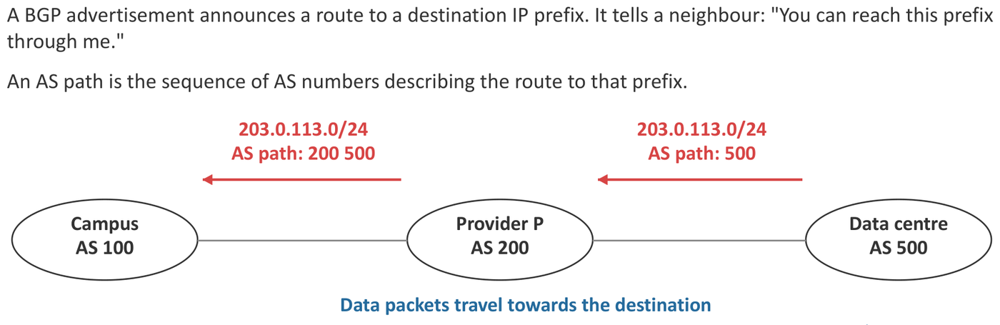
6.6 How an AS chooses and passes on routes
Import policy: which received routes the AS accepts, and what preference it gives them. Export policy: which routes it advertises to each neighbour.
Route selection (in this course):
- Loop check: reject any AS path that already contains your own ASN.
- Local preference: choose the route with the highest local preference first. The AS sets this value with its import policy.
- If preferences are equal: choose the shortest AS path.
- If export policy allows, advertise the chosen route to the next AS with your own ASN prepended.
Lecture example. Campus AS 100 gets three routes to the same prefix:
| Via | AS path | Decision |
|---|---|---|
| P | 200 500 | Choose (2 ASes) |
| Q | 300 400 500 | Usable, but longer (3 ASes) |
| Another neighbour | 600 100 500 | Reject: it contains our ASN 100 (a loop) |
If the campus advertises its route, the path becomes 100 200 500.
Must the campus choose the shorter path? No. If traffic through Q is cheaper, the campus gives Q’s routes a higher local preference. Local preference is checked before the AS-path length, so the longer path through Q wins.
6.7 Multihomed does not mean transit
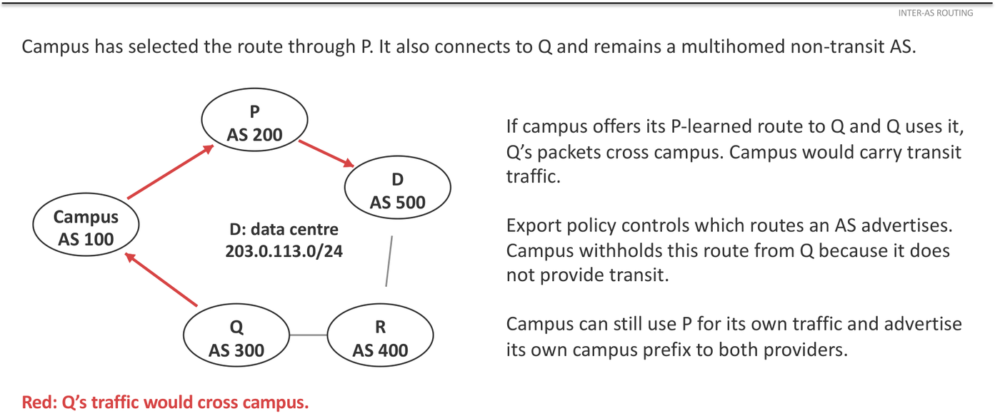
The campus connects to providers P and Q. It uses P’s route to the data centre for its own traffic. If it advertised that P-learnt route to Q, Q could send its traffic through the campus. The campus would then carry transit traffic.
The campus stops this with its export policy: it does not advertise P’s routes to Q (or Q’s routes to P). It still advertises its own prefix to both providers. Choosing a route for your own traffic and offering a route to another AS are separate decisions.
6.8 When a false announcement spreads (YouTube, 2008)
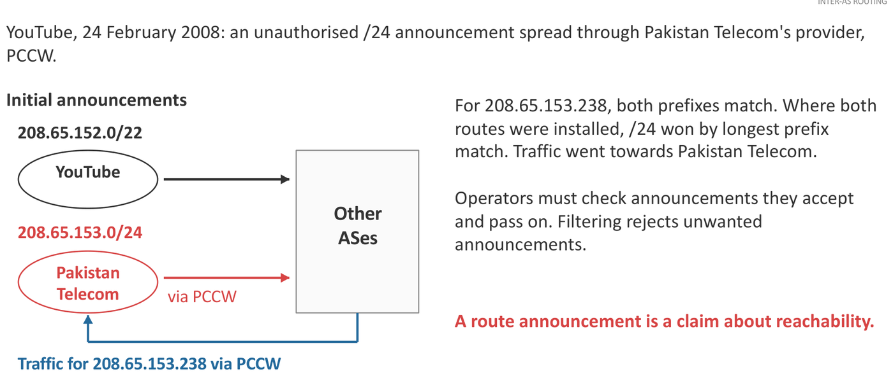
- YouTube announced 208.65.152.0/22.
- Pakistan Telecom announced 208.65.153.0/24 without authority, and its provider (PCCW) passed it on.
- For 208.65.153.238, both prefixes match. Routers that installed both chose the /24 by longest-prefix match. So the traffic went to Pakistan Telecom.
Lessons: a route announcement is only a claim about reachability. Operators must filter the announcements they accept and pass on. RPKI origin validation checks whether an AS is allowed to announce a prefix. It does not check the whole AS path.
6.9 Building a BGP table
A BGP table lists, for each prefix, every route the AS has received. Each route shows the next hop and the AS path. One route per prefix is marked as preferred.
Example. Four ASes are joined by these links:
| Link | Addresses on the link |
|---|---|
| AS 100 – AS 200 | AS 100: 192.0.2.1, AS 200: 192.0.2.2 |
| AS 200 – AS 300 | AS 200: 198.51.100.1, AS 300: 198.51.100.2 |
| AS 300 – AS 400 | AS 300: 203.0.113.1, AS 400: 203.0.113.2 |
| AS 200 – AS 400 | AS 200: 192.0.2.5, AS 400: 192.0.2.6 |
Each AS owns one prefix: AS 100 has 172.16.1.0/24, AS 200 has 172.16.2.0/24, AS 300 has 172.16.3.0/24, and AS 400 has 172.16.4.0/24.
AS 300’s BGP table. AS 300 has two neighbours, AS 200 and AS 400, so it can hear up to two routes for each prefix. There is no local-preference setting, so the shortest AS path wins. The next hop is the neighbour’s interface address on the shared link.
| Network prefix | Next hop | AS path | Preferred? |
|---|---|---|---|
| 172.16.1.0/24 (AS 100) | 198.51.100.1 | 200 100 | Yes |
| 172.16.1.0/24 (AS 100) | 203.0.113.2 | 400 200 100 | |
| 172.16.2.0/24 (AS 200) | 198.51.100.1 | 200 | Yes |
| 172.16.2.0/24 (AS 200) | 203.0.113.2 | 400 200 | |
| 172.16.4.0/24 (AS 400) | 203.0.113.2 | 400 | Yes |
| 172.16.4.0/24 (AS 400) | 198.51.100.1 | 200 400 |
How to build each row:
- Start at the AS that owns the prefix. Its first advertisement has the path “owner”.
- Each AS that passes the route on prepends its own ASN.
- The route reaches AS 300 through one neighbour. The next hop is that neighbour’s address on the link to AS 300, and the path starts with that neighbour’s ASN.
- AS 300 does not list its own prefix as a learnt route. Any route whose path contains 300 would be rejected as a loop.
Traceroute across ASes. A host 172.16.1.10 in AS 100 traces to 172.16.3.30 in AS 300. The packets follow the preferred AS path 100 → 200 → 300. Each router replies with its interface towards the source:
| Hop | Address | Why |
|---|---|---|
| 1 | 172.16.1.1 | AS 100’s router, on the host’s LAN |
| 2 | 192.0.2.2 | AS 200’s interface towards AS 100 |
| 3 | 198.51.100.2 | AS 300’s interface towards AS 200 |
| 4 | 172.16.3.30 | The destination |
7. Common Traps
- Distance vector: for each destination, take . The next hop is that . Ignore your old table.
- The direct link to a neighbour is not always the best route to it. Compare it with the paths through the other neighbours.
- With link costs, add the link cost, not 1.
- RIP: 16 = unreachable, so totals 1–15 are usable. A long path can be “unreachable” even though it exists.
- Poisoned reverse = advertise 16 to your own next hop, all the time. It stops two-router loops only.
- OSPF: Hello, LSA, flooding, LSDB, Dijkstra. Every router has the same map but a different table.
- An OSPF cost is configured. It is not a measured delay. “Shortest” means lowest total cost, not fewest hops.
- Dijkstra: write the step table with the predecessor in brackets. Settle the smallest tentative distance each time. The next hop is the first router after the source.
- BGP: reject a path that contains your own ASN. Then highest local preference, then shortest AS path. Prepend your ASN when you advertise.
- In a BGP table, the next hop is the neighbour’s interface on the shared link, not a router deep inside another AS.
- A multihomed AS avoids transit with its export policy.
- BGP runs over TCP. OSPF uses Dijkstra. RIP uses Bellman–Ford.
- RPKI checks who may announce a prefix (the origin). It does not check the whole AS path.